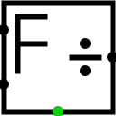

Divisieur à virgule flottante
Divisieur à virgule flottante
| Librairie : | Arithmétique |
| Introduction : | 2.0 Beta 22 |
| Apparence : |  |
Comportement
Ce composant divise les valeurs flottantes du dividende (bord ouest - extrémité nord) par les valeurs flottantes du diviseur (bord ouest - extrémité sud) et produit les valeurs flottantes du quotient (bord est).
Si les données d'entrée contiennent des signaux non définis (U), d'erreur (E) ou la valeur NaNf, il émettra sur la sortie la valeur NaNf et sur la sortie d'erreur au sud un 1
Pins
- Bord ouest, extrémité nord
- Entrée : Le dividende à virgule flottante. C'est-à-dire le premier opérande pour la division. La largeur de donnée en bits correspond à la propriété Dimension flottant.
- Bord ouest, extrémité sud
- Entrée : le diviseur à virgule flottante. C'est-à-dire le deuxième opérande pour la division. La largeur de donnée en bits correspond à l'attribut Dimension flottant.
- Bord est
- Sortie : Le résultat de la division à virgule flottante. La largeur de donnée en bits correspond à l'attribut Dimension flottant.
- Bord sud
- Sortie : Erreur, prend la valeur 1 si le diviseur reçoit un signal d'erreur (E), indéfini (U) ou les valeurs en virgule flottante NaNf. La largeur de donnée est de 1.
Attributs
Lorsque le composant est sélectionné ou en cours d'ajout, les touches Alt-0 à Alt-9 modifient son attribut Dimension flottant.
- Dimension flottant
- La largeur de donnée en bit du diviseur 32 ou 64 bits.
Comportement de l'outil pousser
Aucun.
Comportement de l'outil text
Aucun.
Retour à Référence de la bibliothèque